User manual · Version 0.1.9
Using TellusHive
This manual explains how to use TellusHive 0.1.9, the open-source design office of AI agents for civil engineers. It walks through the window from the first start to a checked design, and it gives the details of every setting, so you can read it from the beginning or jump to the chapter you need. The screenshots come from the program itself, and the names of buttons and fields are written in bold exactly as they appear on screen.
Download the manual as PDF 35 pages · 7.3 MB
Contents
1. Getting started
This chapter takes you from the download to a first answer from a bot. It covers installing the program, giving it a language model to work with, and the parts of the window you will use every day.
Install TellusHive
Download the file for your computer from the release page. The macOS download is TellusHive-0.1.9-macos-universal.zip, which runs on both Apple silicon and Intel Macs with macOS 11 or newer, and the Windows download is TellusHive-0.1.9-windows-x64.zip for 64-bit Windows 10 or 11. Neither program is signed by Apple or Microsoft, so the first start needs one extra step.
On macOS, unzip the file and move TellusHive.app to the Applications folder. Right-click the app and choose Open the first time, because a double-click on an unsigned app only shows a warning. If macOS still refuses, run xattr -dr com.apple.quarantine /Applications/TellusHive.app once in Terminal. On Windows, unzip the folder and start tellushive.exe, and if SmartScreen warns, choose More info and then Run anyway. The Windows build is made on a Mac and has not yet been tested on many Windows computers, so please report what you find.
To build TellusHive from source instead, install Rust, then run git clone https://github.com/Sompote/TellusHive.git, cd TellusHive, cargo build --release and ./target/release/tellushive.
The first start
TellusHive opens on the Home page. On the first start it makes a project called First project in your projects folder (~/Documents/TellusHive unless you change it), adds the design office team with its nine agents, and looks for the engineering programs it knows, such as Tellus, Pondus and Aedifex, so they are ready as plugins.
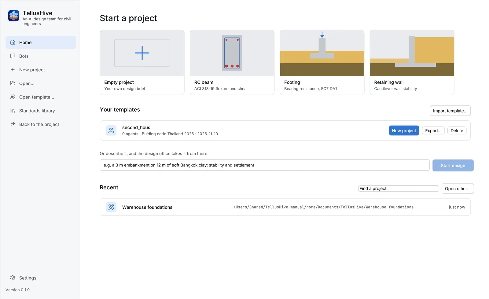
The Home page has four parts. Start a project offers an empty project and three worked examples (an RC beam to ACI 318-19, a pad footing to EC7 DA1 and a cantilever retaining wall), so you can see the team work before you give it your own job. Your templates lists the set-ups you have saved, Or describe it takes a one-line brief and starts the design office on it, and Recent reopens the projects you worked on. The rail on the left also leads to Bots, New project, Open…, Open template…, the Standards library and Settings.
Add a model
The agents need a language model, so give TellusHive one before you ask for a design. Open Settings (the gear at the top right of the window, or Settings at the bottom of the Home rail) and choose Models. There are three ways to start, and you can mix them later.
- An API key. The default provider is OpenRouter with the model
deepseek/deepseek-v4.1-flash-1017, which uses tools and reads images. Paste your OpenRouter key into API key under Provider: openrouter, or set the environment variableOPENROUTER_API_KEYbefore you start TellusHive. A DeepSeek key works the same way under Provider: deepseek (DEEPSEEK_API_KEY). - Your Claude or ChatGPT subscription. If Claude Code or Codex is installed and signed in on this computer, choose the provider
claude-codeorcodexfor a bot or an agent, and it runs on your subscription with no API key. - Your own model. Point the
vllmprovider at a vLLM server on this computer, orvllm-vastat one on a rented GPU, or useollamafor a local Ollama server.
Chapter 7 explains every provider and setting. A key typed in Settings is saved in settings.json in the data folder, which only your user account can read.
How the window is laid out
The bar at the top of the window shows the open project on the left, with a menu to switch projects, and the three layers of the program in the middle: Bots, Team and Project. The gear opens Settings and the moon switches between the light and dark theme. While the agents work, the bar also shows how many are working, the elapsed time, Stop and Watch, which opens the Design office where the team's task is running.
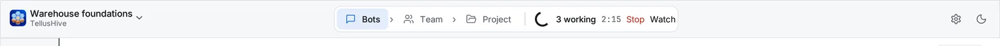
The three layers build on each other. A bot is the one you talk to, a project manager with its own name, face and character. A team is the design office a bot can call, led by its coordinator and staffed by specialist agents. A project is what they work on, a folder with its description, notes, standards, plugins and results. You can work at any layer: talk to a bot in Bots, talk to a whole team in the Design office, or set up the team and the project in Team and Project. The status bar at the bottom shows how many standards the project follows, how many agents the team has and how many plugins are connected.
Your first design
Open Bots, choose a bot in the rail on the left, and write your request in the box at the bottom, for example "Design a pile foundation in Bangkok clay for a load of 10,000 kN". Press Enter to send it. The bot reads the request, may ask you for missing data such as the soil profile or the load basis, and then plans the work, calls its team if it has one, and reports back with the clauses it relied on. Calculation sheets, drawings and reports appear in the chat as they are made, and a click on a file opens it. Chapter 2 explains bots in detail.
Give the agents all the data you have: geometry, loads and whether they are factored, materials, the soil profile with groundwater, the standard to follow and the deliverables you want. The coordinator gives work only to the specialists the request needs, so name every deliverable, such as drawings, a report or a BIM model, if you want it.
2. Bots
A bot is your project manager. You talk to it in a chat the way you would message a colleague, and it agrees the scope with you, does small jobs itself, hands larger ones to the teams and bots it may call, checks what comes back and reports to you. Each bot has its own name, picture, character, reply language, model and conversation, and it carries its own bundle of standards and plugins that it sets its project up with. This chapter explains how to make a bot, how to set it up, and how to work with it.
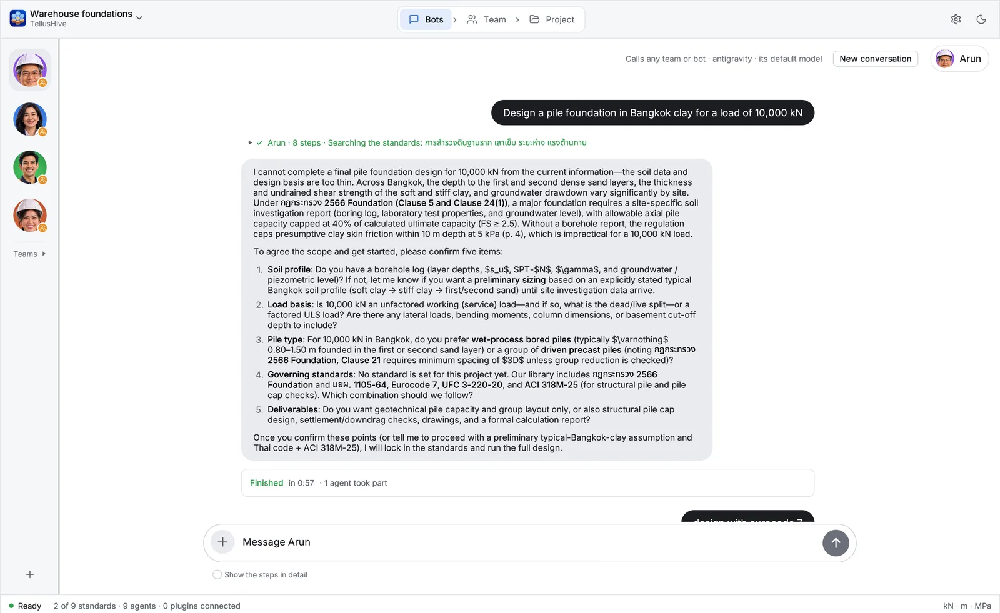
The Bots workspace
Click Bots in the top bar. The rail on the left shows your bots as round pictures, with a small team mark on those that call other bots or teams and a pulsing dot on one that is working, and below them Teams, which opens into the saved teams so you can also talk to a team directly. The chat with the chosen bot fills the middle. At the top right of the chat, the line of grey text says what the bot calls and which model it runs on, New conversation clears the chat, and the chip with the bot's picture and name opens its profile on the right.
Make a bot
Click + at the bottom of the rail. TellusHive offers two kinds of bot, and you can change everything about either one later.
- New bot that works alone makes one agent with its own model and tools. It answers and calculates itself, and you can let it call other bots later.
- New bot that calls a team makes a project manager that hands the work to a team, led by that team's coordinator. It starts with the first saved team, usually the Design office.
The new bot opens with its profile on the Setup tab, so you can name it and shape it straight away.
The profile
Click the chip with the bot's name at the top right of the chat to open the profile, and click it again or the × to close it. The profile has three tabs.
- Activity shows what is happening now. Now says what the bot and its agents are doing during a task, Who works draws the bot with the teams and bots it calls, Project names the folder the bot works in, with Show in Finder and New conversation, and Usage totals the tokens the bot has used.
- Library lists the files of the bot's project by kind, calculations, drawings, reports, pictures, attachments and work files, and a click opens a file.
- Setup holds everything that makes the bot what it is, described below.
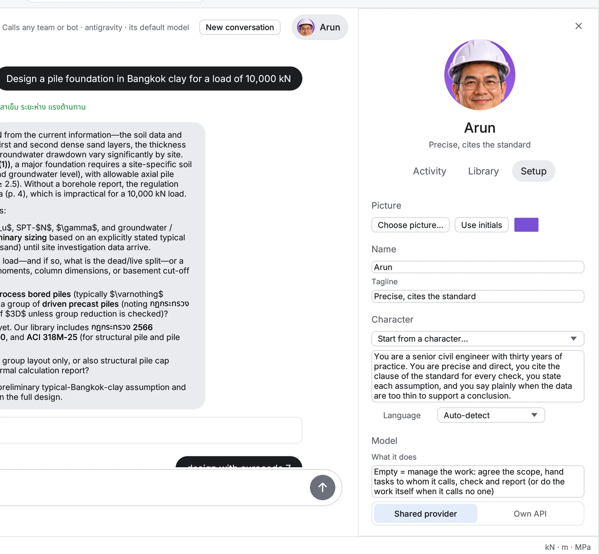
Setup, from top to bottom
Picture. Choose picture… takes a PNG, JPEG or WebP file and crops it to its centre square, and Use initials goes back to the initials on a coloured circle. The colour swatch sets the colour of the initials and of the dot beside the bot's replies.
Name and Tagline. The name is how the bot introduces itself and how other agents and bots address it. The tagline is the one line shown under the name in the rail and the profile, such as "Precise, cites the standard".
Character. The text box describes who the bot is and how it talks: its background, tone and habits. Start from a character… fills it from five ready-made characters, a senior engineer who cites the standard, a friendly tutor who explains step by step, a site engineer with short practical answers, an independent checker who recomputes before trusting, and a research professor who flags weak evidence. Language sets the reply language: Auto-detect answers in the language you write in, or choose English, Thai, Japanese or Chinese to fix it.
Model. What it does holds the bot's work instructions. Left empty, a bot that calls others manages the work (it agrees the scope, hands tasks out, checks and reports) and a bot that calls no one does the work itself. Below it, Shared provider runs the bot on one of the providers in Settings › Models, with its Provider, Model, Thinking (off, low, medium or high), Temperature and Max turns. Own API gives the bot its own model API instead, with its own Base URL, API key and Model, and List models asks the API which models it serves, which also checks the address and the key. A bot's own key affects only that bot, and it is kept in the bot's file, readable only by you.
Tools and skills. All tools gives the bot every built-in tool (calculation sheets, design modules, Python, drawings, files, the standards library and the rest), or switch it off to tick only some. All skills does the same for the skills in your skill folders. May use Claude Code / Codex lets the bot hand a programming task to Claude Code or Codex as a worker.
Calls. This decides whom the bot hands work to. With May call any team or bot switched on, the bot chooses for each task among all saved teams, which join through their coordinator, and all other bots. Switch it off to tick the teams and bots yourself. A bot with nothing to call works alone.
Standards and plugins. This is the bot's bundle. The bot sets its project up with these standards and plugins, so every agent it calls cites these standards and can drive these programs, and the bot's choice replaces the project's own. The standards come from the library in Settings › Standards library (chapter 5), and the plugins from Settings › Plugins & MCP (chapter 6). Each plugin a bot drives starts when the bot runs, so switch on only those it needs, and the teams it calls use their own.
Project. A new bot works in its own folder inside the bot's data folder. Use the open project points it at the project open in the window, Choose project… at any project folder, and Use its own folder takes it back. The project can change only while the bot is idle. At the bottom of Setup, Delete bot removes the bot with its conversation and its own folder, while a linked project is kept.
Working in the chat
Write in the box at the bottom and press Enter to send, or Shift+Enter for a new line. The + beside the box attaches files such as drawings, borehole logs, photos or PDFs, and you can also drop files onto the window. Each file is copied into the project's attachments/ folder, and the bot reads text and PDFs and looks at pictures, using the vision model when its own model cannot see images.
While the bot works, the top bar shows how many agents are working, the time and Stop, and the chat shows what each agent is doing. The bot's replies stream in as it writes, and a reply that ran several steps starts with a folded line, such as "Arun · 8 steps · Searching the standards", which opens into the steps. Show the steps in detail under the box adds the tool calls, the agents' reasoning and the token counts to the chat. When a task ends, a card says whether it finished, was stopped or failed, how long it took and how many agents took part.
Calculation sheets, drawings, reports and pictures appear in the chat as the agents save them, and a click opens them. A link in a reply, such as reports/Embankment_3m_Bangkok_clay_stability.pdf, opens the file from the project folder in your default app, and a web link opens in the browser. For safety the chat opens only files inside the project folder, and it does not open programs or scripts.
New conversation in the chat header clears the chat and starts a fresh conversation, after you confirm. The bot forgets the old conversation, its standards, plugins, character and files stay, and the old conversation is kept in the project's sessions/ folder. The button is greyed out while the bot works, so stop the task first.
Good practice
Give the bot one clear request with all the data, and name the deliverables you want. Pick the governing standards for the project before a real design, because without them the agents search the whole library and may mix codes. A bot that calls a team is the right choice for full designs with drawings and reports, whereas a bot that works alone answers quick questions faster and at lower cost.
3. Teams and agents
A team is a design office of AI agents. One agent is the coordinator, who leads the team, plans the work and hands each task to the specialist that fits it, and the others are the specialists, each with one discipline, its own model, its own tools and its own programs. A bot that calls a team talks to its coordinator, and you can also talk to a team directly in the Design office. This chapter explains the built-in team, how to change it, and every setting of an agent.
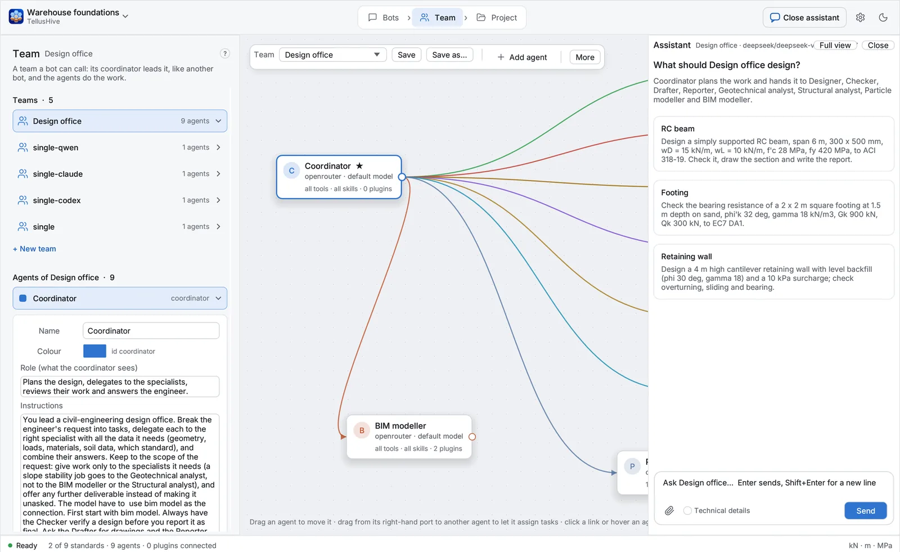
The built-in design office
TellusHive starts with a team called Design office with nine agents. Each specialist has a default time limit for one delegated task, so a stuck step cannot hold the run up for ever.
| Agent | What it does | Programs it drives | Time limit |
|---|---|---|---|
| Coordinator | Plans the design, delegates to the specialists, reviews their work and answers you | none, it delegates | none |
| Designer | Looks up the clauses of the chosen standard and writes traceable calculations | design modules, calculation sheets | 20 min |
| Checker | Recomputes the key results independently and returns pass or a list of errors | calculation sheets | 20 min |
| Drafter | Draws sections, plans and details as SVG and DXF | CADCraft | 20 min |
| Reporter | Assembles the calculation report from the saved calculations and drawings | none | 20 min |
| Geotechnical analyst | Slope stability, finite element analysis of excavations, embankments and foundations, site response | TellusLEM, Tellus, Tellus3D, Motus | 90 min |
| Structural analyst | Frames, walls and slabs with member design, and continuum finite elements | Pondus, ContinuaX | 90 min |
| Particle modeller | Discrete element and grain-water simulations | Granum, GranumFL | 90 min |
| BIM modeller | Builds the BIM model and terrain from the design | Aedifex, CADCraft | 30 min |
The team keeps to the work you ask for, so a slope analysis does not start the BIM modeller unless you ask for a model. The checker reports all its findings in one reply, the coordinator sends them back to the designer in one revision task, and after at most two revision rounds the coordinator asks you instead of looping.
The Team workspace
Click Team in the top bar. The panel on the left lists the saved teams under Teams, with + New team, and the agents of the chosen team below, where a click on an agent opens its settings. The canvas in the middle draws the team as a graph: each agent is a card with its provider, model, tools, skills and plugins, the coordinator carries a star, and each arrow means one agent may hand tasks to another.
The bar above the canvas holds the team menu, Save, Save as…, Add agent and More, which has Rename team…, Delete team…, New team… and Reset to the default design office. The reset brings back the built-in wording after an update, so use it if you have not changed the team yourself, or note your changes first and add them again after.
On the canvas you drag an agent to move it, and you drag from an agent's right-hand port to another agent to let the first assign tasks to the second. Click a link, or hover over an agent, to show its × for removal, right-click for more actions, and press Delete to remove the selection. Make coordinator in an agent's settings makes it the team's lead. While a task runs, the panel at the bottom right of the canvas shows which agents are working and what each is doing.
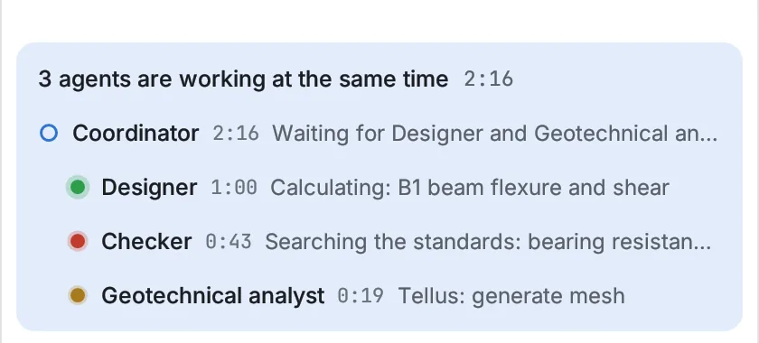
An agent's settings
Click an agent in the list or on the canvas to open its settings in the left panel.
Name, Colour and Role. The name is how the other agents address it, and the colour marks its replies and its card. Role (what the coordinator sees) is the one-line description the coordinator reads when it chooses whom to give a task, so write what the agent is for, not how it works.
Instructions. The agent's full brief: its discipline, its method, what it must check and what it hands back. Keep the scope clear, because the coordinator relies on each agent staying in its lane.
Model. Provider and Model choose the language model (chapter 7), and an empty model uses the provider's default. Thinking sets how much the model reasons before it answers: off, low, medium or high, or the provider's default. Thinking is off by default because it makes routine steps much slower, so switch it on only where judgement matters, such as for the checker. Temperature sets how varied the answers are, Max turns caps the steps of one task, and Time limit stops a delegated task after that many minutes and gives the coordinator the answer so far (0 means no limit).
Built-in tools. All tools gives the agent every built-in tool, or switch it off and tick the tools it needs: the standards library (search_standards, get_clause, list_standards), the design modules and calculation sheets, Python (run_python), drawings, file reading and writing, and the rest. Fewer tools make a model faster and less likely to wander.
Skills. All skills gives the agent every skill found in your skill folders, or tick the ones it needs. An agent sees only a one-line description of each skill and reads the full text when it needs it (chapter 8).
Plugins. The MCP programs this agent may drive, from the list in Settings › Plugins & MCP. Its tools reach the agent as <plugin>__<tool>, and an agent whose plugins would pass 128 tools reaches the largest ones through two gateway tools instead, so no tool is lost. Give each program to the specialist who uses it rather than to everyone, because every tool description is sent with every model call.
Coordination. May delegate to other agents lets the agent hand tasks along the arrows on the canvas, and May use Claude Code / Codex lets it give a programming task to Claude Code or Codex as a worker.
Making your own team
Start from the design office with Save as… and change the copy, or click + New team for an empty one. Add agents with Add agent, give each a clear role and instructions, choose one as coordinator with Make coordinator, and draw the delegation arrows from the coordinator to the specialists. A small team of a coordinator, a designer and a checker is often enough, and it is cheaper and faster than the full office. Teams are saved as JSON in the teams/ folder of the data folder, and every saved team appears in the Bots rail under Teams and in the Calls list of every bot.
Settings that keep a run short
Several limits stop an agent that is going nowhere. Each agent's Max turns and Time limit apply per task, and Settings › General › Agent limits sets three limits for every agent: Stop after failures stops an agent whose tool fails that many times in a row with the same error, Stalled reply abandons a model reply that sends nothing for that many seconds and asks again, and Longest reply abandons one model reply that runs longer than that. When an agent is stopped, the coordinator is told why and decides what to do next.
4. Projects
A project is what the bots and teams work on: a folder on disk that holds its description, the notes every agent reads, the standards and plugins it uses, the files you send and everything the agents produce. This chapter explains how to make and open projects, what each part of the Project layer does, the Design office where you talk to a whole team, and templates that save a set-up for later projects.
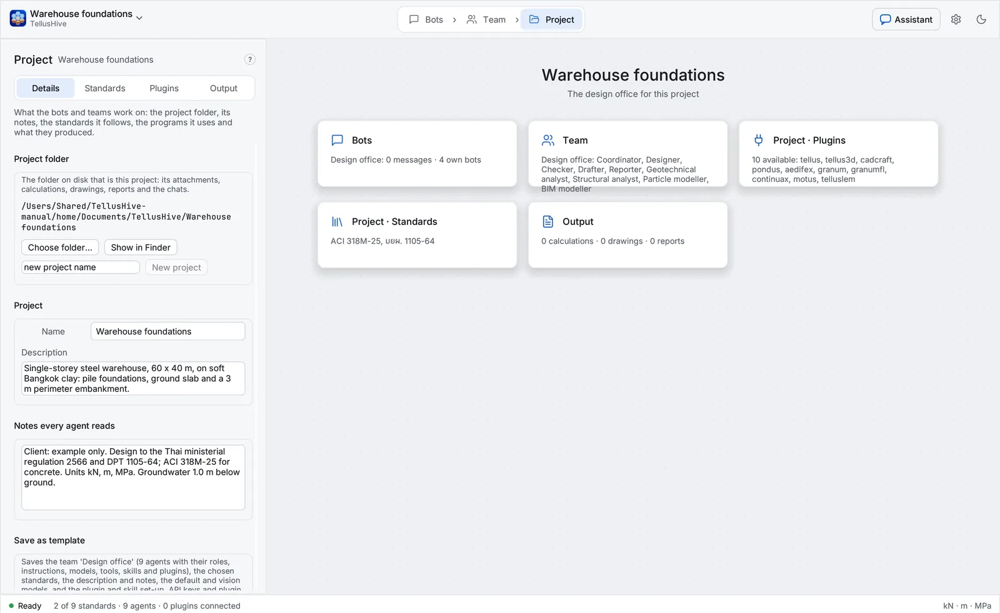
Make or open a project
There are several ways to start. On the Home page, click Empty project or one of the worked examples, pick one of Your templates and click New project, or type a brief under Or describe it and click Start design, which makes a project and hands the brief to the design office at once. The New project item in the Home rail and the project menu at the top left of the window also make one, and Open… or Open other… under Recent opens an existing project folder.
New projects go into your projects folder, ~/Documents/TellusHive unless you change it under Settings › General. A bot can also work in its own folder, or be pointed at any project in its Setup (chapter 2).
The Project layer
Click Project in the top bar. The tabs Details, Standards, Plugins and Output sit at the top of the left panel, and the canvas on the right shows a summary card for each part of the project, which you can click to open that part.
Details. Project folder shows the folder on disk that is this project, with Choose folder… to work in another folder (it opens it as a project, or makes it one) and Show in Finder. A name typed in the box below it, followed by New project, makes a new project next to the current one. Project holds the Name and the Description, a short statement of the job such as "Single-storey steel warehouse, 60 x 40 m, on soft Bangkok clay". Notes every agent reads is the place for facts that apply to every task: the client, the site, load assumptions, units, the groundwater level and office rules. Every agent reads these notes, so keep them short and factual. Save as template saves the whole set-up, described at the end of this chapter.
Standards. This tab switches on the standards from the library that this project follows. The agents search only the standards switched on here and cite their clauses, and with none switched on they search the whole library. The search box on the canvas lets you try a search the way the agents do. Standards are imported once, for every project, under Settings › Standards library (chapter 5), and Import or manage standards in Settings takes you there.
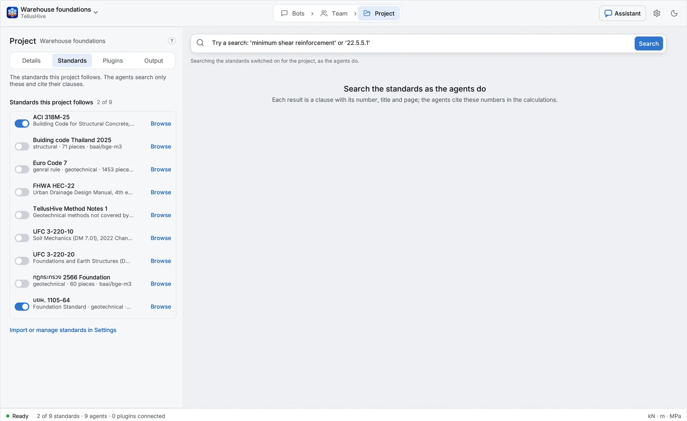
Plugins. This tab chooses which plugins this project's agents may use. With Use every plugin switched on in Settings on, the project uses all of them, and that is the default. Switch it off to choose plugins one by one for this project. A plugin switched off in Settings shows "off in Settings" and cannot be used by any project. The canvas shows the selected plugin with its description, program and arguments, and Connect and list tools to test it. Plugins themselves are added and edited under Settings › Plugins & MCP (chapter 6), and Add or manage plugins in Settings goes there.
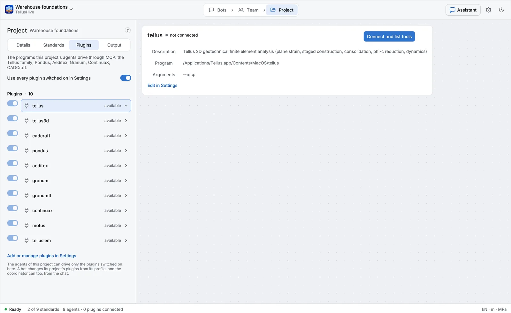
Output. The calculations, drawings, reports and pictures the agents have made for the project, with each item opening in the viewer. A calculation sheet shows every step with its clause and a PASS or FAIL, a drawing can be opened in CADCraft, and a report opens as a PDF.
The Design office
The Design office is where you talk to a whole team about the open project, rather than to a bot. It appears in the Bots rail as the team's round badge, and the chat shows the team's agents on the left, the conversation in the middle and the files on the right. The empty chat offers the three example requests, and the box at the bottom works like a bot's: Enter sends, Shift+Enter adds a line, and the paper clip attaches files. Technical details shows the tool calls, reasoning and token counts. On the other pages, Assistant at the top right opens the same chat in a panel beside the page, so you can ask the team something while you edit its set-up.
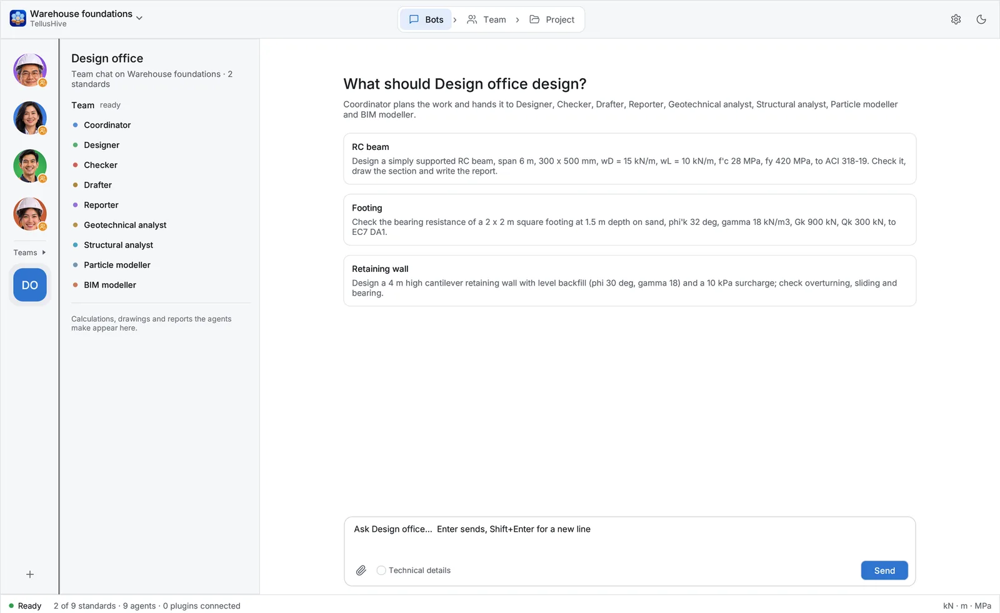
When the agents work in an analysis program, TellusHive can open the program's window so you see the model, which you can switch off under Settings › General. When they build a BIM model in Aedifex, a 3D view of the model appears beside the chat and refreshes as the model changes. Drag to rotate, right-drag or Shift-drag to pan, scroll to zoom and double-click to fit.
Files in a project folder
The project folder is an ordinary folder you can open in Finder or Explorer. It holds project.json (the name, description, notes, standards, plugins and team), attachments/ for the files you send, calcs/ for calculation sheets, drawings/ for SVG, DXF and JSON drawings, reports/ for the reports, images/ for pictures, models/ for the analysis models, work/ for scripts and working files, and sessions/ with the full log of every agent's work. Each bot and each team keeps its own conversation in the project, so several bots can work in one project without mixing their chats.
Templates
A template saves the whole set-up so a new project can start from it: the team with each agent's role, instructions, model, tools, skills, plugins and delegation links, the chosen standards, the description and notes, the default and vision models, the plugins the team uses and the skill folders. API keys are never saved, and plugin environment values and HTTP headers are blanked, while the chat and the outputs stay with their project.
Save a template with Save as template on the Details tab or Save as template… in the project menu. On the Home page, Your templates lists them with New project, Export… and Delete, and Import template… reads a template file from another computer. When a template names plugins this computer does not have, they are added but switched off until their program is found, and standards missing from the library are listed so you can import them.
5. The standards library
The standards library is the set of design codes the agents may cite, such as ACI 318, Eurocode 7, the UFC manuals, the Thai ministerial regulation on foundations or DPT 1105-64. You import your own licensed copies once, and every project and bot then chooses from that one pool. The agents search the library before they calculate and cite the clause and page they used, which is what lets you trace each number in a design back to its source.
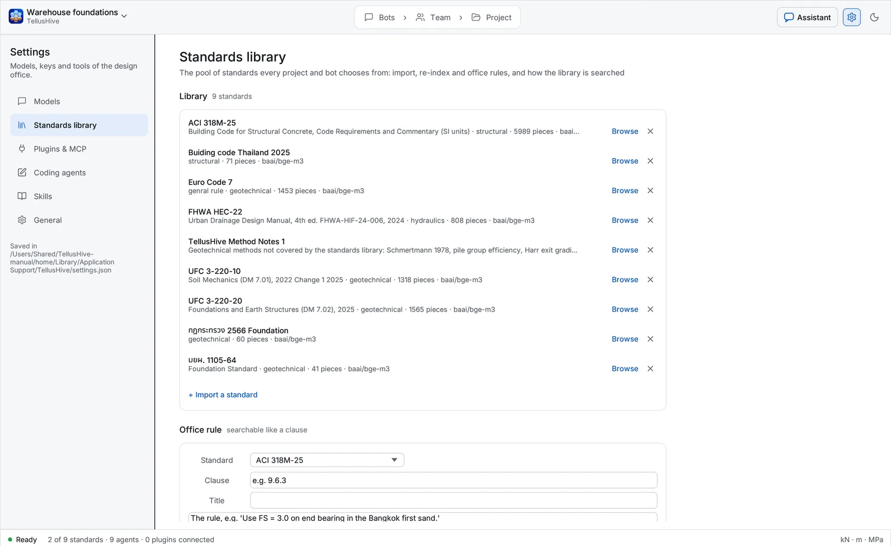
Where the library lives
Open Settings and choose Standards library, or click Standards library in the Home rail. The page lists every standard with its code, name, discipline, the number of pieces it was split into and how it was indexed, and each row has Browse to read its clauses and × to delete it. A project or bot only switches standards on, under Project › Standards or in a bot's Setup, so deleting a standard here removes it for everyone, and TellusHive asks before it does.
Import a standard
- Click + Import a standard.
- Fill in Code, which is the name the agents cite, for example
ACI 318M-25,EN 1997-1:2004orมยผ. 1105-64. The code is required. - Fill in Name with the full title, choose the Discipline (structural, geotechnical, steel, loads, seismic, highway, hydraulic or other), and add the Country and Year.
- Click Choose… and pick the file. PDF, text (
.txt) and Markdown (.md) are accepted, and a standard published in parts can be picked as several files at once. - Click Import. A progress bar shows while TellusHive extracts the text, splits it into clauses and indexes them. When it finishes, the standard appears in the list.
- Switch the standard on for each project that follows it, under Project › Standards, or for a bot in its Setup.
After an import, try a search to check it. On Project › Standards, type a question the way an engineer would ask it, such as "allowable skin friction soft clay", and check that the right clause comes back with its number and page. If the clause numbers come out wrong, the PDF's layout probably confused the clause splitter, and a cleaned-up Markdown copy of the standard usually indexes better.
Scanned PDFs
A scanned PDF is a set of pictures with no text, so it cannot be indexed, and the import stops with a message that the PDF is probably a scanned image. This is common for older Thai standards. Run optical character recognition on it first, for example with ocrmypdf --language tha+eng in.pdf out.pdf, check that the result has selectable text, and import the new file.
How the library is searched
The Embedding setting at the bottom of the page decides how text is matched. Simple: built-in, offline matches words, word pieces and clause numbers, combined with keyword search. It is free, works offline and is good when the question names the clause or the exact term, but it does not understand meaning, so "uplift" does not find "buoyancy". Embedding model through OpenRouter finds clauses by meaning as well as by their words, in Thai and English. The default model baai/bge-m3 is multilingual and costs about USD 0.01 per million tokens, a fraction of a cent for a whole standard. It uses the OpenRouter key from Models, and the text of the standard is sent to OpenRouter to be embedded.
A standard keeps the method it was indexed with. When you change the setting, the page lists the standards indexed another way and offers Re-index, which indexes them again with the current method so the whole library is searched the same way.
Two features help the agents use the library well. The standards briefing searches the library with the words of your request before an agent starts and puts the passages that really match in front of it, with source, clause and page, so even an agent that never searches by itself sees the method the task names. Then each agent can search on its own with search_standards and read a clause with get_clause. When nothing in the library matches, the search says so and asks the agent to state its own source, instead of passing off the nearest passage as the method. On 54 GeoTechBench items whose methods the library holds, a team on Claude Code solved 35 with the briefing against 26 without it (exact McNemar test, p = 0.022), whereas on 33 random items it changed nothing (31 against 31) and doubled the median run time. You can switch the briefing off by setting harness.standards_briefing to false in settings.json.
Office rules
An office rule is a rule of your own design office that the agents should follow, such as "Use FS = 3.0 on end bearing in the Bangkok first sand" or "Use 40 mm cover to stirrups for all beams exposed to weather". Under Office rule, choose the Standard the rule belongs to, give a Clause number and a Title if you like, write the rule, and click Add the rule. The agents find it in a search like any clause of that standard, so it reaches every project that follows the standard.
6. Plugins and MCP
A plugin is a program the agents can drive, such as Tellus for geotechnical finite element analysis, Pondus for structural analysis, Aedifex for BIM or CADCraft for drawings. Plugins speak the Model Context Protocol (MCP), the same protocol Claude Desktop, Claude Code and Cursor use, so any MCP server works as a plugin, whether it is a program on this computer or a service on the internet. This chapter explains how to add, test and remove plugins, how projects, teams and bots get them, and how other AI agents can connect to your bots in the other direction.
All connections are managed in one place: Settings › Plugins & MCP.
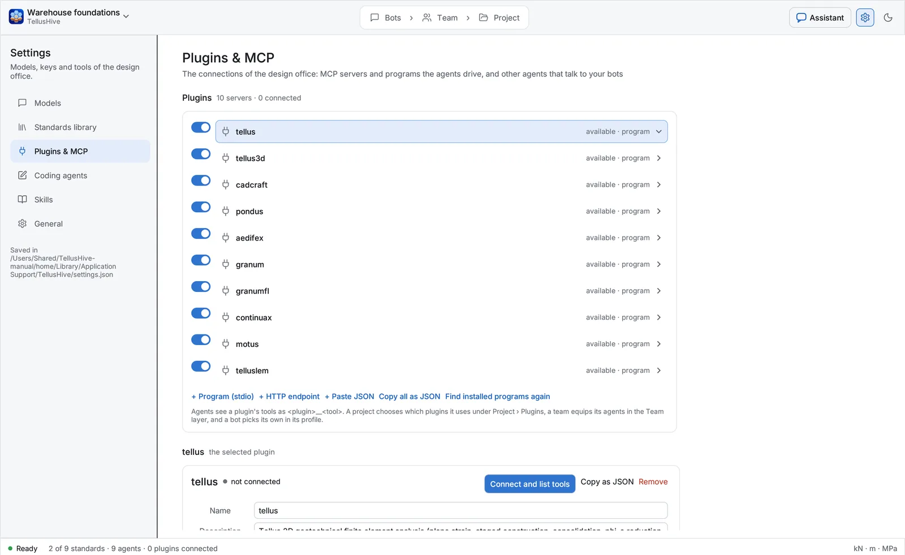
The plugin list
Each row shows a plugin with a switch, its name, its state and whether it is a program or an HTTP endpoint. The switch decides whether projects, teams and bots may use the plugin at all. The state reads available when the plugin is switched on but not yet started, connecting… while it starts, the number of tools once it is connected, failed when it could not start, and off when it is switched off. A plugin starts on its own the first time an agent needs it, so you do not have to connect it by hand.
TellusHive knows the programs of the Tellus family and the others it works with, and on the first start it adds those it finds on this computer.
| Plugin | Program | Used by |
|---|---|---|
tellus |
Tellus, 2D geotechnical finite elements | Geotechnical analyst |
tellus3d |
Tellus3D, 3D geotechnical finite elements | Geotechnical analyst |
telluslem |
TellusLEM, slope stability by limit equilibrium | Geotechnical analyst |
motus |
Motus, 1-D seismic site response | Geotechnical analyst |
pondus |
Pondus, structural analysis and design | Structural analyst |
continuax |
ContinuaX, structural finite elements | Structural analyst |
granum |
Granum, discrete element method | Particle modeller |
granumfl |
GranumFL, DEM with fluid | Particle modeller |
aedifex |
Aedifex, BIM modeller | BIM modeller |
cadcraft |
CADCraft, CAD drafting | Drafter, BIM modeller |
After you install one of these programs, click Find installed programs again so TellusHive finds it and fills in its path.
Add a plugin
There are three ways to add a plugin, and all of them end in the same form, so you can correct anything afterwards.
A program on this computer (stdio). Click + Program (stdio). A new entry appears and is selected. Give it a Name, which the agents see in front of its tools (<name>__<tool>), a Description that tells the agents what it is for, the Program to start (type the path or use Browse…), and its Arguments, such as --mcp. Put an argument with spaces in double quotes. Working dir sets the folder the program starts in, and Environment takes KEY=value lines for variables the program needs, such as an API key of its own.
An MCP server that is already running (HTTP). Click + HTTP endpoint, set the URL (HTTP), for example https://example.com/mcp, and add any HTTP headers as Name: value lines, such as Authorization: Bearer <token>. TellusHive speaks MCP's streamable HTTP transport, so an older server that offers only Server-Sent Events (SSE) may not connect.
Pasted JSON, in the format Claude uses. Click + Paste JSON, paste a configuration, and click Add these plugins. TellusHive reads the mcpServers block of Claude Desktop (claude_desktop_config.json), Claude Code (.mcp.json) and Cursor, the servers block of VS Code, a bare map of servers, or a single server with its own "name". For each server it reads command, args, env, cwd, url, headers, type and disabled, and also description and timeout when they are present. One paste can add several servers, and a server with the same name as an existing plugin replaces it.
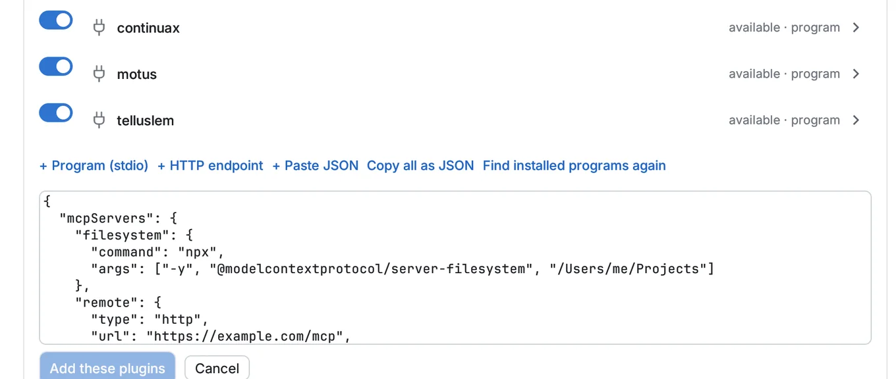
{
"mcpServers": {
"filesystem": {
"command": "npx",
"args": ["-y", "@modelcontextprotocol/server-filesystem", "/Users/me/Projects"],
"env": { "DEBUG": "1" }
},
"remote": {
"type": "http",
"url": "https://example.com/mcp",
"headers": { "Authorization": "Bearer <token>" }
}
}
}
The message under the box says which plugins were added or replaced, and it explains any mistake, such as invalid JSON, a server with neither command nor url, or a name with spaces or a double underscore, in which case nothing is added. Variables written as ${VAR} are kept as written, not expanded, so put the real value in or set it under Environment afterwards. In the other direction, Copy all as JSON copies every plugin in the mcpServers format, and Copy as JSON beside a selected plugin copies just that one, ready to paste into Claude Desktop, Claude Code or Cursor.
Test, inspect and remove a plugin
Select a plugin and click Connect and list tools. TellusHive starts the program or reaches the endpoint, and the state changes to the number of tools. The Tools card then lists each tool with its description and the arguments it takes, and Server log shows what the program wrote to its error output, which is the first place to look when a plugin fails. Disconnect stops it again. Call timeout sets how long one tool call may take, 600 s for a plugin you add, which you can raise for long analyses. Remove deletes the plugin after you confirm, and projects, teams and bots that used it lose its tools.
Who may use a plugin
A plugin switched on in Settings can be used at three levels, and each level narrows the one above. A project chooses which plugins its agents may use under Project › Plugins, with all of them allowed by default (chapter 4). A team equips each agent with the plugins it needs in the Team layer (chapter 3), so the geotechnical analyst gets Tellus and the drafter gets CADCraft. A bot picks its own plugins under Standards and plugins in its Setup, and these replace its project's choice (chapter 2). The coordinator can also change a project's plugins from the chat with the tools list_plugins and set_project_plugins.
Give each program only to the agents that use it. Every tool description is sent with every model call, and a provider accepts at most 128 tools in one request, so an agent with many plugins costs more and reaches its largest plugins through two gateway tools, plugin_tools and plugin_call.
Let other agents talk to your bots
The section Other agents connect here, at the bottom of the same page, runs an MCP server inside TellusHive. Other AI agents on this computer, such as Claude Code, Codex, Antigravity or Claude Desktop, can connect to it and use four tools: list_bots, list_teams, ask_bot and ask_team. A message sent with ask_bot lands in that bot's chat in the window, so you see the work, and the reply goes back to the calling agent when the run ends.
The server listens on 127.0.0.1:8795 by default, on this computer only. Switch it on or off with Let other agents talk to the bots and teams while TellusHive runs, change the Port if 8795 is taken, and keep the Token secret, because every client must send it. New token makes a new one, which turns away clients that hold the old one. Copy client config copies a ready configuration with the address and the token, for Claude Code, Claude Desktop, Cursor and others, and Copy token copies the token alone. Changes apply when TellusHive restarts.
To add TellusHive to Claude Code, for example, paste the copied configuration into the project's .mcp.json, or into the mcpServers block of Claude Desktop's configuration. ChatGPT and Grok run in the cloud, so they need a public HTTPS tunnel to this port, and chapter 9 describes a safer way to reach the bots from outside.
7. Models and providers
Every agent and every bot runs on a language model, and a provider is where that model comes from: a model API on the internet, a model served on your own hardware, or a coding agent such as Claude Code that you are already signed in to. This chapter explains the Models page of the settings, each kind of provider, and the choices that affect speed and cost.
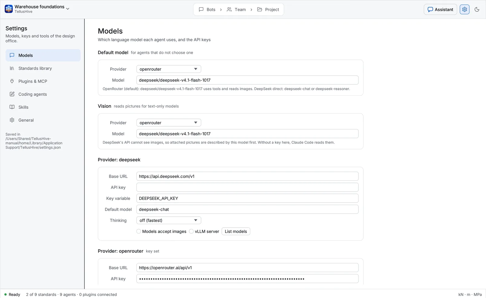
The Models page
Default model sets the Provider and Model for every agent and bot that does not choose its own. The default is OpenRouter with deepseek/deepseek-v4.1-flash-1017, which uses tools and reads images. Vision sets the model that describes attached pictures for models that cannot see images, such as DeepSeek's own API, and without a key there, Claude Code reads the pictures instead.
Below these comes one card per provider. A model API provider has a Base URL, an API key (or the name of the environment variable that holds it, in Key variable), a Default model, a Thinking level, a switch for whether its models accept images, a vLLM server switch and List models, which asks the API which models it serves and so also checks the address and the key. + Provider (any OpenAI-compatible endpoint) adds a provider of your own.
The providers
| Provider | What it is | Key |
|---|---|---|
openrouter |
Many models through one API, the default | OPENROUTER_API_KEY |
deepseek |
DeepSeek's own API (deepseek-chat, deepseek-reasoner) |
DEEPSEEK_API_KEY |
openai |
OpenAI's API | OPENAI_API_KEY |
ollama |
A local Ollama server at http://localhost:11434/v1 |
none |
vllm |
A vLLM server on this computer at http://localhost:8000/v1 |
none unless the server sets one |
vllm-vast |
A vLLM server on a rented GPU, such as Vast.ai | the server's key |
claude-code |
Claude Code on your Claude login | none |
codex |
Codex on your ChatGPT login | none |
antigravity |
Google Antigravity (agy) on your Google login |
none |
A key typed into API key is saved in settings.json, which only your user account can read, and a key in the environment variable named under Key variable works without being saved anywhere.
Claude Code, Codex and Antigravity as a model
Any agent or bot can run on Claude Code, Codex or Antigravity instead of a model API. Choose the provider claude-code, codex or antigravity for it, and it uses your subscription with no API key. The model name is optional: sonnet, opus or haiku for Claude Code, or empty for the program's default. The program receives the agent's own tools through TellusHive's MCP server, so it calculates, searches the standards and drives plugins like any other agent, and every call is logged in the project's sessions/ folder.
Settings › Coding agents holds the settings of the three programs. Each has Enabled, Program (empty searches the usual places, and the line under the title says where it was found), Arguments and Time limit. For Claude Code and Codex, Use my Claude subscription and Use my ChatGPT subscription remove ANTHROPIC_API_KEY or OPENAI_API_KEY from the program's environment, so a key in your shell does not override the login. Claude Code runs with --permission-mode acceptEdits by default, which lets it edit files in the project's work folder but not run shell commands, and Codex runs in its workspace-write sandbox.
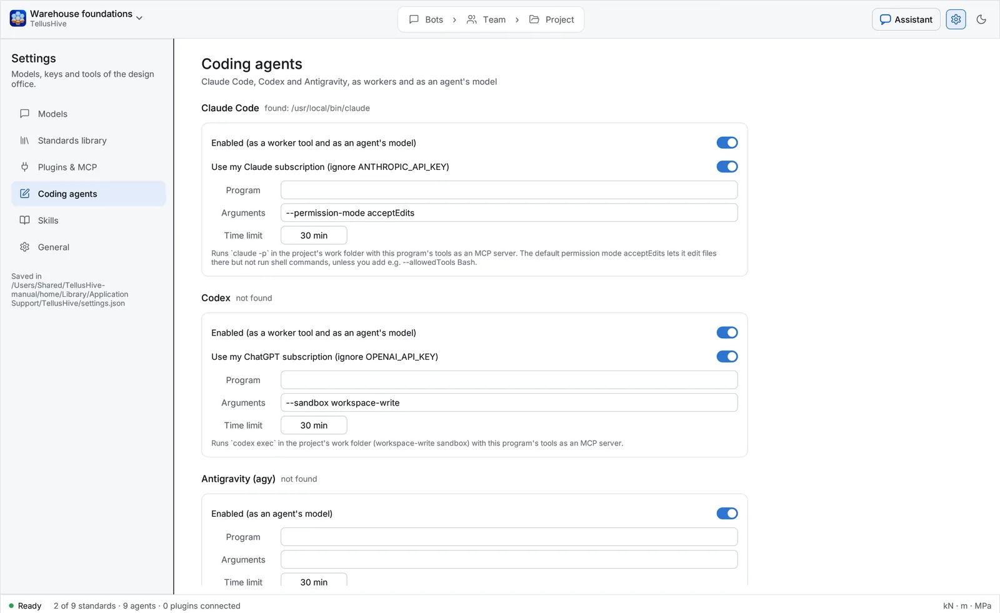
These programs are much slower per step than a model API, because each step starts the program with its own large system prompt, so they suit programming tasks and careful checks better than routine design steps. A team can mix providers freely, for example a coordinator on Claude Code that delegates to a designer on DeepSeek.
Your own model on vLLM
An agent can run on an open-weight model that you serve yourself with vLLM, on this computer or on a GPU rented from a service such as Vast.ai, so your data stays on hardware you control. Start the server with tool calling switched on, because the agents work through tools:
vllm serve Qwen/Qwen3-32B --enable-auto-tool-choice --tool-call-parser hermes \
--reasoning-parser qwen3 --max-model-len 32768 --api-key <key>
The tool-call parser depends on the model: hermes for Qwen, llama3_json for Llama, mistral for Mistral and openai for gpt-oss. For a server on this computer, choose the vllm provider and leave the key empty unless the server was started with --api-key. For a Vast.ai instance, set the Base URL of vllm-vast to http://<instance public IP>:<external port>/v1 and enter the same key as --api-key, because that port is open to the internet. An SSH tunnel (ssh -L 8000:localhost:8000 -p <port> root@<ip>) avoids the open port, and the local vllm provider then reaches the instance.
When Default model is empty, the agents use the model the server lists, so you do not have to type its name. Restart TellusHive after you load a different model at the same address. Any other OpenAI-compatible provider becomes a vLLM provider with its vLLM server switch. Run a short task on the model you serve and check that it calls the tools correctly before you give it a design.
Thinking
Thinking decides how much a model reasons before it answers: off, low, medium or high, or the provider's default. Every provider and agent starts with thinking off, because reasoning makes routine steps much slower. In one recorded pile-cap run, the designer on DeepSeek V4.1 Flash spent 85 to 176 s per step writing up to 90,000 characters of reasoning, whereas with thinking off its steps took 2 to 13 s. Switch thinking on for an agent whose work needs judgement, such as the checker, and leave it off for the drafter and the reporter. The level is set per provider in Models, per agent in Team, and per bot in its Setup, and a provider that does not support it ignores it.
A bot's own API
A bot can call its own model API instead of a shared provider, which is useful when one bot should use a different account or a model the others do not. In the bot's Setup, choose Own API under Model and fill in the Base URL, API key and Model, then click List models to check them. The key is kept in the bot's own file, readable only by you, and the other bots and teams are not affected.
Token use
The window counts tokens while the agents work. The top bar shows the running total of the task, the chat shows the tokens of each step when Show the steps in detail is on, and a card at the end of each task gives the totals with a table by agent and model. The counts cover the agents' model calls only, so picture descriptions by the vision model, embeddings, summaries and work done inside Claude Code or Codex are not included, and no cost is shown because the app holds no prices.
8. Skills and general settings
This chapter covers the two remaining pages of the settings. Skills holds the reference knowledge you can give the agents, and General holds the projects folder, the analysis program windows, Python, the limits that stop a stuck agent, and the theme.
Skills
A skill is a folder of expert knowledge that an agent loads when it needs it, such as a method for designing shallow foundations to Eurocode 7 or a house style for calculation reports. Each skill is a folder with a SKILL.md file, whose front matter gives the skill's name and a one-line description, and any reference files the skill uses. This is the Claude skills format, so skills written for Claude work in TellusHive unchanged, and ~/.claude/skills is read by default. An agent sees only the one-line description of each skill it is equipped with and reads the full text with read_skill when the task calls for it, so a long skill costs nothing until it is used.
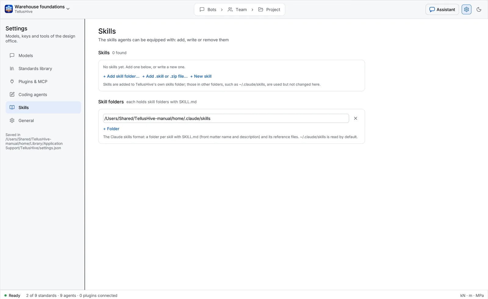
The Skills page lists the skills found, with three ways to add one. + Add skill folder… copies a skill folder, + Add .skill or .zip file… unpacks a packaged skill, and + New skill writes a new one from a Name and a Description, which you then fill in with its method. New skills go into TellusHive's own skills folder, whereas skills in other folders, such as ~/.claude/skills, are used but not changed here. Skill folders lists the folders that are scanned, and + Folder adds another.
Give skills to agents in the Team layer, with All skills or by ticking them one by one, and to a bot in its Setup.
General
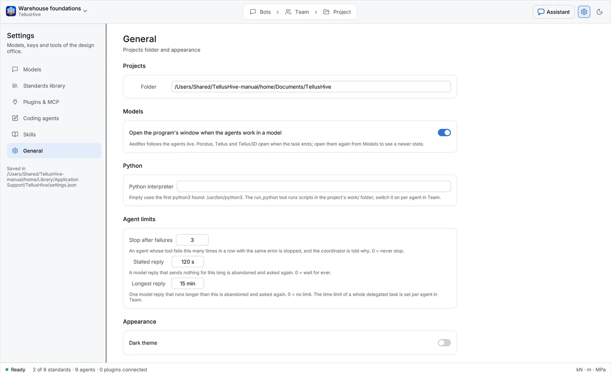
Projects. Folder is where new projects are made, ~/Documents/TellusHive by default.
Models. Open the program's window when the agents work in a model opens the window of an analysis program so you see the model the agents build. Aedifex follows the agents live, whereas Pondus, Tellus and Tellus3D open when the task ends, and you can open them again from Models to see a newer state.
Python. Python interpreter chooses the Python that the run_python tool uses to run scripts in the project's work/ folder. Empty uses the first python3 found, and the line below names it. Install the packages your scripts need, such as NumPy or SciPy, into that interpreter. An agent can run Python only if run_python is switched on for it in Team.
Agent limits. Stop after failures stops an agent whose tool fails this many times in a row with the same error, and tells the coordinator why (0 never stops). Stalled reply abandons a model reply that sends nothing for this many seconds and asks again (0 waits for ever). Longest reply abandons one model reply that runs longer than this many minutes and asks again (0 sets no limit). The time limit of a whole delegated task is set per agent in Team.
Appearance. Dark theme switches the window to dark colours, and the moon at the top right of the window does the same.
All settings are saved in settings.json in the data folder, and the bottom of the settings rail shows its path.
9. The cloud server and the iPhone app
TellusHive can run its bots on a cloud machine without the window, so you can reach them from a phone while the work goes on in the cloud. The server is the serve mode of the normal tellushive program, and an iPhone app talks to it. This chapter gives the outline, and ios/README.md gives every step.
The iPhone app is a preview of the source code. It has not yet been built or tested on a device, so treat this chapter as a guide for developers rather than a finished feature.
The server
On the cloud machine, build TellusHive with cargo build --release and copy your data folder to it, so the server has your provider keys, bots, teams and standards. Then start the server:
./target/release/tellushive serve # listens on 127.0.0.1:8796
On its first start the server writes a random token to the file server-token in the data folder and prints it, and every request from the phone must carry that token. You can also set it with --token or the environment variable TELLUSHIVE_SERVER_TOKEN. A task runs on the server whether or not the phone stays connected, so you can lock the phone during a long design and the app picks up the conversation again when you return. The transcript is the same file the window keeps, so a conversation started on the phone continues in the Bots workspace and the reverse. Do not run the window on the same data folder while the phone is in a conversation with the same bot, because each keeps its own copy of the open transcript and the last one to save wins.
A safe address
The server listens on 127.0.0.1 because it speaks plain HTTP, and the token must cross the internet only inside HTTPS. Tailscale is the simplest choice, because the server then stays off the public internet: install Tailscale on the server and on the phone, sign both into one account, and run sudo tailscale serve --bg 8796 on the server, which prints an HTTPS address such as https://tellus-server.tail1234.ts.net. Cloudflare Tunnel works too if you prefer a public address, and then the token is the only protection.
The iPhone app
The app shows your bots like a messenger, streams each reply as the bot writes, shows what the team is doing with a Stop button, sends photos from the camera or library and files such as PDFs, and opens the calculations, drawings and reports in Quick Look. Building it needs the full Xcode, XcodeGen and an Apple ID, as described in ios/README.md. On first launch, enter the HTTPS address and the token, which the app keeps in the iPhone's Keychain.
10. Command line, data and troubleshooting
This chapter lists the commands that run TellusHive from a terminal, where it keeps its files, and what to do when something does not work.
Commands
The same program opens the window or runs in a terminal, depending on how you start it. On macOS the program inside the app is /Applications/TellusHive.app/Contents/MacOS/tellushive, and on Windows it is tellushive.exe.
tellushive # the window
tellushive run --project DIR "Design a ..." # one turn of the project's team, printed in the terminal
tellushive plugins [--project DIR] # the plugin tree and each plugin's state
tellushive --mcp --project DIR # the engineering tools as an MCP server on stdio
tellushive serve [--port 8796] [--token T] # the bots over HTTP, for the iPhone app
run continues the same conversation as the window's for that project's team and prints every step, the files made and a token report at the end, so it suits scripted checks. --mcp offers TellusHive's own tools (calculations, the standards library and the rest) to another agent such as Claude Code, which is different from the bots' MCP server described in chapter 6.
Where TellusHive keeps its files
The data folder holds what is shared by all projects. On macOS it is ~/Library/Application Support/TellusHive, on Windows %APPDATA%\TellusHive, and on Linux ~/.local/share/TellusHive, and the environment variable TELLUSHIVE_HOME moves it anywhere else. It contains settings.json (providers, keys, plugins and limits, readable only by you), bots/ with one folder per bot (its settings, picture and, by default, its own workspace), teams/, templates/, standards/ (the indexed library) and skills/.
Each project is its own folder, under ~/Documents/TellusHive by default (chapter 4). Its sessions/ folder holds one log per agent session in JSON Lines, which records every message, tool call and result, and it is the place to look when you want to know exactly what an agent did. Starting a new conversation keeps the old logs.
Troubleshooting
An agent says there is no API key. Add the key for the agent's provider under Settings › Models, or set its environment variable before you start TellusHive, or choose claude-code or codex for the agent if you are signed in to one of them. List models on the provider's card checks the address and the key.
A plugin shows failed. Open Settings › Plugins & MCP, select it, and read the red message and the Server log. The usual causes are a program that is not at the path given (install it and click Find installed programs again, or correct Program), a missing --mcp argument, or an HTTP endpoint that needs a header such as Authorization. A plugin you do not have can simply be switched off.
The agents cite nothing, or cite the wrong standard. Check that the project follows the right standards under Project › Standards, and try the same question in the search box there. If the library has no matching clause, import the standard, and if the clauses come back badly split, import a cleaned-up Markdown copy (chapter 5).
A run takes too long. Turn thinking off for routine agents, give each agent only the tools and plugins it uses, set a Time limit per agent in Team, and check the limits under Settings › General. A bot that works alone answers small questions much faster than a whole team.
A link in the chat does not open. The chat opens only files inside the project folder that exist, and it never opens programs or scripts. The message above the message box says why a link was refused, and you can always open the file from the project folder with Show in Finder.
New conversation is greyed out. The bot is still working. Stop the task with Stop in the top bar, then start the new conversation.
Something else. Report it at github.com/Sompote/TellusHive/issues with what you did, what you expected and what happened, and attach the relevant lines of the session log if you can.